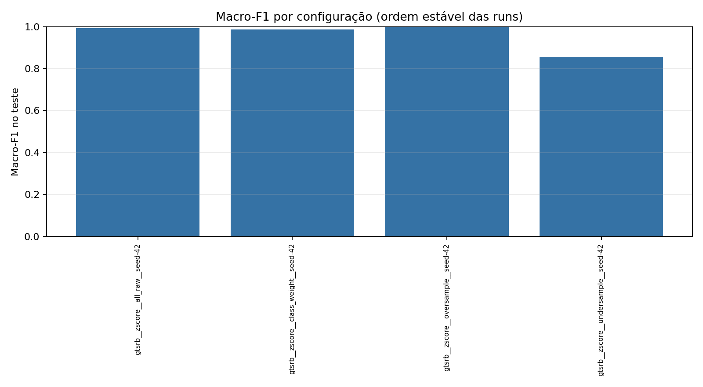

Runs: 4 · Status: {'completed': 4}

| Run | Status | Normalização | Balanceamento | No-op | Seed | Accuracy | Balanced accuracy | Macro-F1 | Detalhes |
|---|---|---|---|---|---|---|---|---|---|
| gtsrb__zscore__all_raw__seed-42 | completed | zscore | all_raw | True | 42 | 0.9938733832539143 | 0.9937973974761335 | 0.9937103979614363 | relatório |
| gtsrb__zscore__class_weight__seed-42 | completed | zscore | class_weight | False | 42 | 0.9828114363512593 | 0.9883814794992782 | 0.9856896443849041 | relatório |
| gtsrb__zscore__oversample__seed-42 | completed | zscore | oversample | False | 42 | 0.9954050374404356 | 0.9970668364646122 | 0.996748931152382 | relatório |
| gtsrb__zscore__undersample__seed-42 | completed | zscore | undersample | False | 42 | 0.8301565690946222 | 0.8972622476975674 | 0.8568044502282838 | relatório |